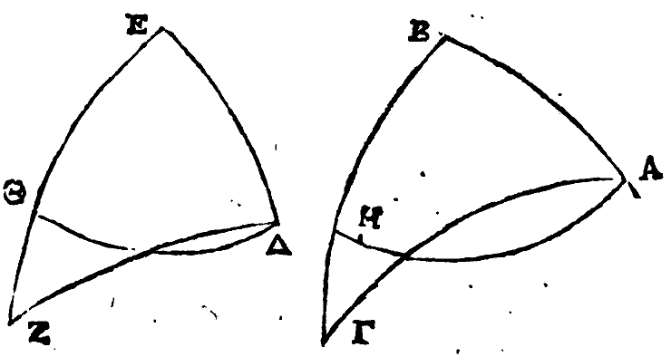

Proposition I.8 — Theorem: Spherical Hinge & Greater Base¶
Menelai Alexandrini Sphaericorum Lib. I Prop. VIII. Theor. (Halley 1758, pp. 8–9)


Enunciation (Halley 1758, p. 8)
If two spherical triangles have two sides equal to two sides respectively, each to each; and the angle of the one contained by those equal sides be greater than the angle of the other: the arc subtended by the greater angle shall be greater than the arc subtended by the lesser; and if the arc be greater, the angle shall also be greater.
The proof of this is the same as in rectilinear triangles. Yet a demonstration of the same is also accomplished in another way. Let \(\triangle \mathrm{AB\Gamma}\) and \(\triangle \mathrm{\Delta EZ}\) be two spherical triangles, and let arc \(\widehat{\mathrm{AB}}\) be equal to arc \(\widehat{\mathrm{\Delta E}}\), and arc \(\widehat{\mathrm{B\Gamma}}\) to arc \(\widehat{\mathrm{EZ}}\): I say that if angle \(\angle \mathrm{B}\) be greater than angle \(\angle \mathrm{E}\), arc \(\widehat{\mathrm{A\Gamma}}\) shall also be greater than arc \(\widehat{\mathrm{\Delta Z}}\); and if arc \(\widehat{\mathrm{A\Gamma}}\) be greater than arc \(\widehat{\mathrm{\Delta Z}}\), angle \(\angle \mathrm{B}\) shall also be greater than angle \(\angle \mathrm{E}\).
With poles \(\mathrm{B}, \mathrm{E}\) and equal radii \(\mathrm{AB}, \mathrm{\Delta E}\) describe arcs \(\mathrm{AH}, \mathrm{\Delta\Theta}\); and since arc \(\widehat{\mathrm{EZ}}\) is equal to arc \(\widehat{\mathrm{B\Gamma}}\), and arc \(\widehat{\mathrm{BH}}\) to arc \(\widehat{\mathrm{E\Theta}}\), the remaining arc \(\widehat{\mathrm{H\Gamma}}\) will be equal to the remaining arc \(\widehat{\mathrm{\Theta Z}}\). Now because equal segments of equal circles begun from points \(\mathrm{H}, \mathrm{\Theta}\)—namely the continued segments \(\mathrm{H\Gamma}, \mathrm{\Theta Z}\)—stand at right angles upon the diameters of the equal circles whose arcs are \(\mathrm{AH}, \mathrm{\Delta\Theta}\), and in both
f. 0025 · p. 9segments equal arcs less than their halves are taken, namely arcs \(\widehat{\mathrm{\Gamma H}}, \widehat{\mathrm{Z\Theta}}\); and because angle \(\angle \mathrm{B}\) is greater than angle \(\angle \mathrm{E}\), arc \(\widehat{\mathrm{\Delta\Theta}}\) is less than arc \(\widehat{\mathrm{AH}}\): therefore (by Theodosius III.1) the straight line joining points \(\mathrm{Z}, \mathrm{\Delta}\) will be less than the join \(\mathrm{A\Gamma}\), and consequently arc \(\widehat{\mathrm{A\Gamma}}\) is greater than arc \(\widehat{\mathrm{\Delta Z}}\).
And if arc \(\widehat{\mathrm{A\Gamma}}\) be greater than arc \(\widehat{\mathrm{\Delta Z}}\), by the like argument it will be proved that the straight line joining \(\mathrm{Z}, \mathrm{\Delta}\) is less than the line joining points \(\mathrm{A}, \mathrm{\Gamma}\); whence arc \(\widehat{\mathrm{\Theta\Delta}}\) will also be less than arc \(\widehat{\mathrm{AH}}\), and therefore angle \(\angle \mathrm{B}\) is greater than angle \(\angle \mathrm{E}\). Quod erat demonstrandum.